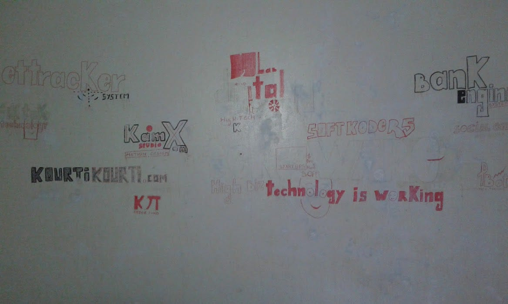
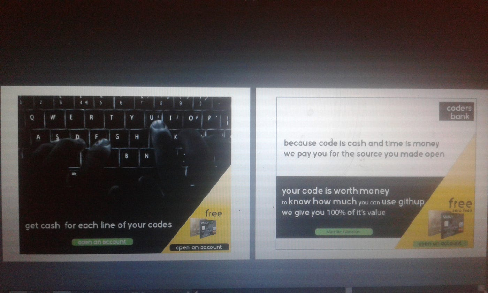
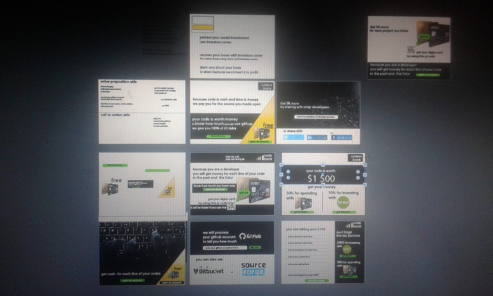
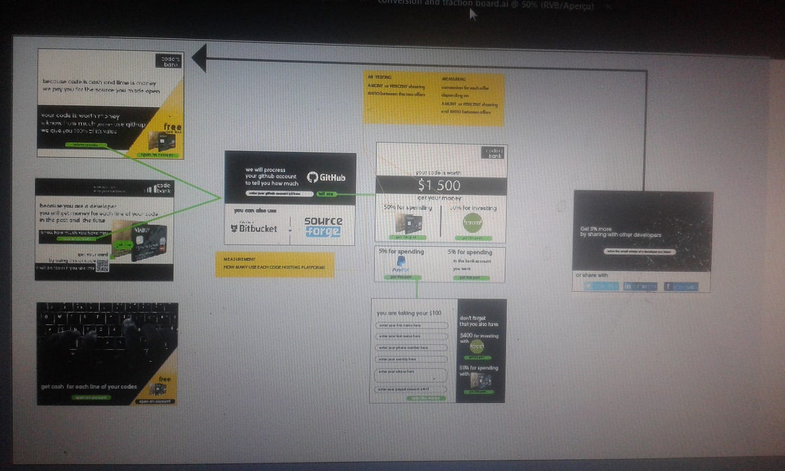

Mar 24
From Bank Engine to Game Engine
Or From Option Greedy to Frustum Culling

Ouipredict was really performant at predicting stock trends and ready for production in financial markets using the API of stock marketplaces that were available years before Robinhood and Etoro started. The latency-driven trading model that it has was for sure a premise of what became known and exploited during the Robinhood stonk momentum. Spotting interesting things early is for sure something I have learned and you also can learn it because it is a skill but I hope that unlike me you will benefit from the execution of these early ideas that you will spot with your tech ideas exploration and ideation skills.
For my part, I got few financial benefits from it but a large set of skills, knowledge, evolving and increasing curiosity as well as connections with interesting and talented people like you from whom I have learned. Did All of this through the medium of the internet which I have been using since Altavista was the leader in search what was years before google. Bank engine was about all these interesting works in which I was involved since my first online trades in 2008 or 2009.
In 2014 I had almost a working system and technical stack that was able to smartly trade in high frequency with 99.9999% confidence of profitability like the HFT firms of wall street and better market-making was also a module of this system and this market-making model was able to capture rebates like virtu and .. are actually doing. But how can you start a car without fuel and how can you provision a car with fuel when you are in the middle of a desert far from all gas stations and worse without money to pay the bill.
The profit expectations that I had ignited my eagerness of discovering interesting business ideas because I was and I am not still seeing myself as someone accumulating revenues but instead investing them back. Of course, this early experience in the financial industry helped spot early fintech ideas like mile hedge which was about using this profit capability for giving consumers more financial power. Many of these fintech ideas still apply remark that the idea behind mile hedge is actually the same as this product that Apple launched with Goldman Sachs. I had this same idea but was focused on giving developers more financial power through what I called Coders Bank here are some of the traction funnels and UI that were designed at that time.



I think I don't need to give any more details about all these tech ideas I was working on because some of them are showcased in this article entitled giving away the links to my ideas projects. Then let me just focus on the game industry.
The game industry was always in my heart and mind during all these years and I could say since my first line of code trying to draw make shapes with these framework called allegro back in the 90s and this first lines of code was just about trying to make a game. Remark that most people started to learn code when they were kids because they were willing to make games. Then the idea of a game studio is not a new interest but something that was deeply sleeping inside me while I was involved in all these business models' ideas into the tech industry. ideas that I focused on creative solutions and tools for software engineers and developers. That’s what I was trying to express with this article titled the focus on developers tools but to be precise I should say the focus on developers tools for games developers because the game studio that I am trying to bootstrap as the expression of this sleeping interest in the gaming industry will be a hybrid game studio that will help games developers with services and tools like game portability tools and asset production pipelines as well as game marketing tools while building one of these many gameplay ideas that I have and these that those that will join this initiative will bring.
I am confident about the success of these games and their introduction into the portfolio of publishers like Microsoft because my experience in big tech helped me connect with interesting and talented people working for these publishers. Then showing these games to them will not be so hard. What will be hard is to chip them and who knows the gaming industry knows how hard it is to chip a finished game even a bad one. That’s also why I have decided to take the hybrid game studio approach because a studio focused 100% on designing, developing, and publishing its own games go often out of business by burning cash. To avoid this failure path this studio that I am eager to launch will be offering tools and services to other studios and indie game developers first and with the extra time left work on its own portfolio of games ideas.
I hope I will continue to spot interesting business ideas enabled by technology, model them and share them with you through the medium of blogging like what I am actually doing but gaming is the sector in which I am actually willing to contribute with my skills and expertise. For escaping the execution of the many ideas that I have in Gaming I have been making up excuses like I don't have a powerful computer with a high-end graphics card but constraints are often a means for the artist to produce something highly meaningful with masteries.
Then I could say that the path that I am taking could be considered like hitting refresh like Microsoft and if you don't see the game industry as a segment of the tech industry or otherwise then you could say that it’s like I am leaving the tech industry but I am not because I love technology and I can’t imagine myself without it.
PS: most of the early predictions models of ouipredict were only about taking the same trend in all rounds of trades. for example, always taking a trading round as bullish. That seems really stupid and bullsh.. . I hope this article mostly about me isn't because I have learned a lot from the story and trajectory of others like you.
early view of the interesting game concepts around real maps and many experiences not only about combat but discoveries and learning